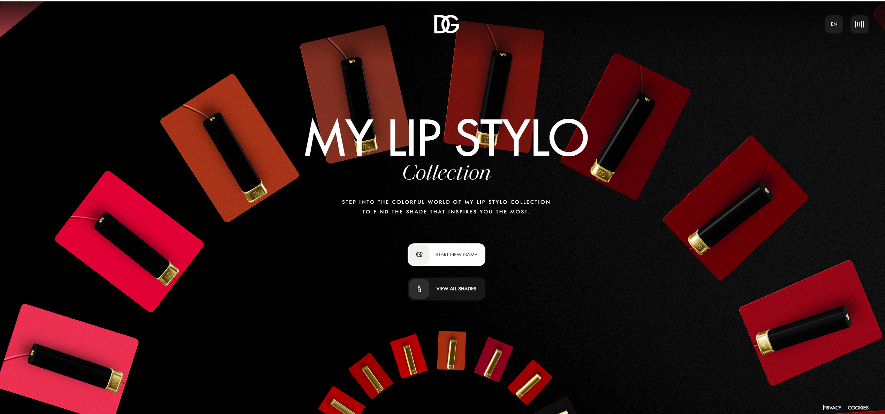

Color Theory: what works and why...
Colors play a crucial role in websites, impacting user engagement, brand recognition, visual appeal, and emotional response. Below I compare two different websites, one that I admire for its use of color, and another whose approach I find less effective. Included are screen captures and direct links to each website for reference.
When evaluating web design through the lens of color theory, the Lip Stylo Instore website by Dolce & Gabbana and the Yale School of Art website represent two vastly different approaches — and two very different outcomes.
The comparison highlights a key lesson in design: effective color theory is not about how many colors you use, but how thoughtfully they're applied.A well thought out, curated color palette-like that on the D& G Lip Stylo site supports clarity and brand identity. A site without intentional color strategy — even one rooted in creative freedom like the Yale Art School site — can unintentionally undermine user experience.
Dolce & Gabbana...
Dolce & Gabbana Lip Stylo Instore Website

The D & G website is a strong example of how color can be used strategically to reinforce brand identity, enhance usability, and evoke emotion. Its palette is limited and cohesive. Rich Product hues set against black backgrounds create a sense of luxury and focus. Color is used not just decoratively, but purposefully — to guide attention to key products, build visual hierarchy, and communicate mood. As a result, the site feels not only visually compelling, but also functionally intuitive. Users can immediately understand where to focus, what to explore, and how different elements relate to one another.
Yale School of Art...

In contrast, the Yale School of Art website offers a very different experience. Designed as a publicly editable,community-driven platform,, its color usage lacks a unified palette background colors, text contrast, and visual density. This can lead to confusion. Consistent contrast makes some text hard to read, unpredictable combinations disrupt visual harmony, and the absence of a cohesive scheme weakens overall identity and usability.